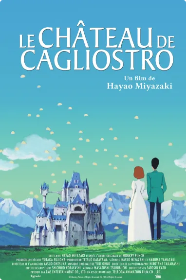
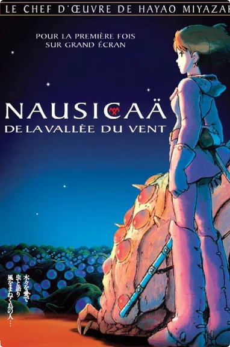

La filmographie d’Hayao Miyazaki
Hayao Miyazaki est un célèbre réalisateur de la plupart des films d’animation du studio Ghibli. Voici un grand nombre de ses réalisations sur cette page.
-

1979 Le Château de Cagliostro
-

1984 Nausicaä de la Vallée du Vent
-

1986 Le Château dans le ciel
-

1988 Mon voisin Totoro
-
1989 Kiki la petite sorcière
-
1992 Porco Rosso
-

1997 Princesse Mononoké
-

2001 Le Voyage de Chihiro
-

2004 Le Château ambulant
-

2013 Le vent se lève